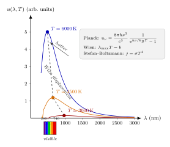

为什么炉火先红后白?
上一节我们让一个光子在散射体里做"随机行走", 把光看成粒子才是自洽的。这一节我们换一个入口: 不再问单个光子怎么走, 而是问一炉子烧红的铁, 它一整面发出来的光, 频谱到底长什么样。
铁匠把钢条伸进炉膛, 一开始什么也看不到, 只觉得热浪扑脸; 再等几秒钢条泛出暗红, 像一块还没熟透的炭; 继续加热颜色从樱桃红转到橙黄, 再从橙黄褪成发白的亮色; 若是有本事把温度顶到一万开, 颜色会再向蓝白那边滑过去。为什么是先红后白? 为什么不是先蓝后红? 为什么连铜、铁、陶土这些完全不同材料的炉子, 烧到同一温度都呈现同一颜色? 这个"炉火颜色图谱"正是整个量子力学得以登场的那块幕布。
我们要看到的不止"颜色变白"这件表象, 而是两条定量律: 谱的峰值波长与温度成反比 (Wien 位移), 谱的总辐射功率与温度四次方成正比 (Stefan-Boltzmann); 并且这两条定律背后都指向同一个更深的公式 —— Planck 1900 年拿来"插"掉紫外灾变的那条谱函数。
一、为什么可以只谈"黑体"? —— Kirchhoff 的普适性
真实炉火的光, 既有钢条自己发出的, 也有炉膛壁发出的, 还混着烟尘的反射。要正面硬算这些细节是绝望的。好在 1859 年 Kirchhoff 做了一个漂亮的热力学论证: 把一个处于热平衡的封闭腔想象成两个子腔, 中间由一块任意材料的薄板分隔; 如果两边都保持温度 $T$, 那么板两边的辐射流必须严格相等, 否则就违反热力学第二定律 (你会得到一个自发的温差)。由此推出: 在温度 $T$ 下, 任何物体的发射率 $\varepsilon(\nu,T)$ 与吸收率 $\alpha(\nu,T)$ 之比, 等于一个只依赖 $\nu$ 和 $T$ 的普适函数, 与材料无关。
这条论证把"铁、铜、陶"的个性一扫而光, 只留下一个理想对象: 黑体 —— 对所有频率吸收率 $\alpha=1$ 的物体, 其发射谱 $B(\nu,T)$ 就是那个普适函数本身。一个开着小孔的大腔体, 腔内表面粗糙发黑, 小孔看上去就是个极好的黑体: 光进得去, 出不来 (在腔内反复被吸收), 腔壁按温度 $T$ 重新辐射出的谱就从小孔漏出来。
Kirchhoff 把问题"压"到了一个未知但普适的函数 $B(\nu,T)$ 上。接下来四十年, 整个物理学在追这条曲线的形状 —— 从两端慢慢合拢, 最后在 1900 年底的一个会议上被 Planck 一锤定音。
二、紫外灾变 —— 经典统计物理的尴尬
Rayleigh 和 Jeans 从经典电动力学出发, 把一个边长 $L$ 的立方腔看成若干个电磁驻波的集合。每一个驻波就是腔内场的一个"模", 模的数目可以用波矢空间数格子算出来, 单位体积、单位频率区间内的模数是
$$ g(\nu)\,\mathrm d\nu = \frac{8\pi\nu^{2}}{c^{3}}\,\mathrm d\nu. $$
(前面的 $8\pi$ 里, $4\pi$ 来自整个球壳, 乘以 $2$ 则是两个正交偏振。) 再把能量均分定理贴上去: 在温度 $T$ 下, 每个机械式谐振子平均持有能量 $k_{\mathrm B}T$ (动能与势能各 $\tfrac12 k_{\mathrm B}T$)。结果每单位体积、每单位频率区间的辐射能量密度就是
$$ u_{\text{RJ}}(\nu,T) = \frac{8\pi\nu^{2}}{c^{3}}\,k_{\mathrm B} T. \tag{1} $$
(1) 是 Rayleigh-Jeans 公式。它在低频确实跟实验吻合, 但随着 $\nu\to\infty$ 它发散, 总能量 $\int_0^{\infty}u\,\mathrm d\nu$ 也发散 —— 这意味着任何一个空腔在任何温度下都应该立刻把无穷多能量从紫外波段泄出来。这是 Ehrenfest 后来戏称的"紫外灾变"。实验上紫外灾变当然不发生: 所有真实的黑体谱都在某一峰值波长之后迅速衰减。
问题显然出在"每个模都有 $k_{\mathrm B}T$ 的能量"这句话上。经典物理在这里无路可走 —— 但它还告诉了我们一件有用的事: 低频极限应当恢复 (1) 式, 这将成为 Planck 公式的一道检验题。
三、Planck 的救命稻草 —— 能量只能是 $h\nu$ 的整数倍
另一端, Wien 在 1893 年用热力学与标度论证得到了经验式 $u(\nu,T)\propto\nu^{3}\exp(-a\nu/T)$, 它在高频区拟合得相当好却在低频失败; 加上前述 Rayleigh-Jeans 在低频对、高频爆炸。Planck 在 1900 年做了一件事: 他先在数学上拼凑了一条能在两头都对的插值式, 再反过来问"什么样的微观假设能导出它"。答案是革命性的: 腔壁的谐振子与辐射场交换能量时, 只能以 $\varepsilon_n = n h\nu$ 的离散包裹进行, $n=0,1,2,\dots$, 其中 $h$ 是一个新的普适常数。
有了这个假设, 频率为 $\nu$ 的一个模的平均能量不再是 $k_{\mathrm B}T$, 而是玻尔兹曼分布下的离散平均:
$$ \langle\varepsilon\rangle = \frac{\sum_{n=0}^{\infty} n h\nu\,\mathrm e^{-n h\nu/k_{\mathrm B}T}} {\sum_{n=0}^{\infty}\mathrm e^{-n h\nu/k_{\mathrm B}T}} = \frac{h\nu}{\mathrm e^{h\nu/k_{\mathrm B}T}-1}. $$
把它乘上模密度 $g(\nu)$, 就得到普朗克公式
$$ u(\nu,T) = \frac{8\pi h\nu^{3}}{c^{3}}\,\frac{1}{\mathrm e^{h\nu/k_{\mathrm B}T}-1}. \tag{2} $$
我们立刻检查两个极限。低频 $h\nu\ll k_{\mathrm B}T$: 把指数展成 $1+h\nu/k_{\mathrm B}T+\cdots$, 分母变成 $h\nu/k_{\mathrm B}T$, 于是 $u\to (8\pi\nu^{2}/c^{3})k_{\mathrm B}T$, 正是 Rayleigh-Jeans 的 (1) 式。高频 $h\nu\gg k_{\mathrm B}T$: 指数项远大于 $1$, 可以丢掉分母里的 $-1$, 于是 $u\to (8\pi h\nu^{3}/c^{3})\mathrm e^{-h\nu/k_{\mathrm B}T}$, 正是 Wien 的指数尾巴。两端都对, 中间那条 Planck 曲线就成了黑体谱的定谱。
更关键的是: Planck 的能量离散假设, 是量子力学的第一滴水。他本人长期把 $h$ 视为"数学把戏", 直到 Einstein 在 1905 年把它升格为"光的能量本身就是 $h\nu$ 的颗粒", 才把量子概念从腔壁谐振子推到辐射场自身。Planck 因此在 1918 年拿到诺贝尔物理学奖。

四、两条推论 —— Wien 位移与 Stefan-Boltzmann 定律
有了 Planck 公式, 两条经验律都能立即推出。
(i) Wien 位移定律. 把 (2) 换成波长形式, 用 $u(\lambda,T)\,\mathrm d\lambda = u(\nu,T)\,|\mathrm d\nu|$ 且 $\nu = c/\lambda$ 得
$$ u(\lambda,T) = \frac{8\pi h c}{\lambda^{5}}\,\frac{1}{\mathrm e^{h c/\lambda k_{\mathrm B}T}-1}. $$
对 $\lambda$ 求导令其为零, 设 $x\equiv hc/\lambda k_{\mathrm B}T$, 得超越方程 $(5-x)\mathrm e^{x}=5$, 它的非零解可以用 Lambert W 函数写成 $x = 5 + W(-5\mathrm e^{-5})\approx 4.9651$。于是
$$ \lambda_{\max}\,T = \frac{hc}{x\,k_{\mathrm B}} \equiv b, \qquad b \approx 2.898\times 10^{-3}\ \mathrm{m\cdot K}. \tag{3} $$
这就是 1893 年的 Wien 位移定律 —— 温度翻倍, 峰值波长折半。
(ii) Stefan-Boltzmann 定律. 把 (2) 对全频积分, 再乘 $c/4$ (从能量密度换到对外辐射通量)。令 $x = h\nu/k_{\mathrm B}T$,
$$ j(T) = \frac{c}{4}\!\int_0^\infty u(\nu,T)\,\mathrm d\nu = \frac{2\pi h}{c^{2}}\!\left(\frac{k_{\mathrm B}T}{h}\right)^{4}\!\int_0^\infty\!\frac{x^{3}\,\mathrm dx}{\mathrm e^{x}-1}. $$
积分等于 $\pi^{4}/15$, 于是 $j = \sigma T^{4}$, 其中
$$ \sigma = \frac{2\pi^{5} k_{\mathrm B}^{4}}{15\,h^{3} c^{2}} \approx 5.67\times 10^{-8}\ \mathrm{W\,m^{-2}\,K^{-4}}. $$
温度从 $3000\,$K 升到 $6000\,$K, 总功率增长 $2^{4}=16$ 倍; 从 $300\,$K 升到 $3000\,$K, 增长 $10^{4}=10000$ 倍 —— 这就是炉火一亮起来"刺眼"的原因: 它的功率增速比颜色的变化快得多。
五、把真数字代进去 —— 从炉火到太阳
用 (3) 式 $\lambda_{\max}T = b = 2.898\times 10^{-3}\ \mathrm{m\cdot K}$ 来算几个典型温度:
- 室温 $T\approx 300\,$K: $\lambda_{\max} = 2.898\times 10^{-3}/300\approx 9.7\,\mu\mathrm m$。整个峰值躺在中红外, 谱在可见光段几乎为零 —— 所以室温物体"看不见", 但热成像仪能把它抓出来。
- 暗红炉火 $T\approx 1000\,$K: $\lambda_{\max}\approx 2.9\,\mu\mathrm m$, 仍在红外; 可见光只是分布曲线在短波一端的尾巴, 而这条尾巴里刚好红光最强。所以铁条刚烧红时颜色是暗樱桃红。
- 亮红 $T\approx 2000\,$K: $\lambda_{\max}\approx 1.45\,\mu\mathrm m$, 红光强度已经相当可观, 颜色发橙。
- 白炽灯钨丝 $T\approx 3000\,$K: $\lambda_{\max}\approx 966\,$nm, 峰值还躺在近红外 — 这也是白炽灯那么费电的原因, 它大半能量烧进了热 —, 但可见光段里红、橙、黄、绿已经全有, 混起来眼睛感知为"暖白"。
- 太阳 $T\approx 5778\,$K: $\lambda_{\max}=2.898\times 10^{-3}/5778\approx 5.02\times 10^{-7}\,\mathrm m = 502\,$nm, 正好落在绿光。从红到紫各色都有可观分布, 混出来我们看到的是"日光白"。
- 蓝巨星 $T\approx 30000\,$K: $\lambda_{\max}\approx 97\,$nm, 已深入紫外。可见光段取到的是谱的长波尾巴, 各色中蓝最强, 故星看上去泛蓝。
一个经典的体感估算: 太阳在地球上空的总通量 $S_\odot\approx 1361\,$W/m², 用 $j = \sigma T^{4}$ 反推太阳表面温度, 需要先把通量按距离平方还原到太阳表面: 太阳半径 $R_\odot\approx 6.96\times 10^{8}\,$m, 日地距离 $d\approx 1.496\times 10^{11}\,$m, 所以表面通量是 $S_\odot(d/R_\odot)^{2}\approx 6.29\times 10^{7}\,$W/m²; 再取四次方根 $T\approx(6.29\times 10^{7}/5.67\times 10^{-8})^{1/4}\approx 5770\,$K, 与恒星光谱分类给出的 $5778\,$K 几乎一致。一条从腔壁谐振子离散能级出发的定律, 竟能把太阳表面温度准确算到个位 —— 这是 Planck 公式最震撼的注脚之一。
顺带: 把 Wien 位移应用到宇宙微波背景, 观测温度 $T=2.725\,$K 给 $\lambda_{\max}=1.06\,$mm, 峰值恰好在毫米波 —— 138 亿年前大爆炸留下来的余温, 如今仍然完整遵守 Planck 曲线 (而且是整个物理学里拟合得最漂亮的黑体谱之一)。
小结
这一节我们把"光是什么"这个大问题, 从"光是怎么传播的"推进到"光是怎么被发射出来的": Kirchhoff 的普适性让我们只需研究一个理想黑体; 经典统计物理在紫外端崩溃, 迫使 Planck 引入 $h\nu$ 的能量颗粒; 普朗克公式 (2) 在低频还原 Rayleigh-Jeans, 高频还原 Wien 指数尾巴, 对波长求极值给出 Wien 位移 (3), 对频率积分给出 Stefan-Boltzmann 的 $T^{4}$ 律; 把太阳 5778 K 和白炽灯 3000 K 等真数字代入, 就能解释从室温的"看不见"到炉火先红后白再偏蓝的全部观察。Planck 1900 年的那次插值, 是量子力学的起点; 紧接着的下一节, 我们要让 Einstein 把"能量颗粒"再往前推一步, 直接作用在金属表面 —— 迎来光电效应。
▲